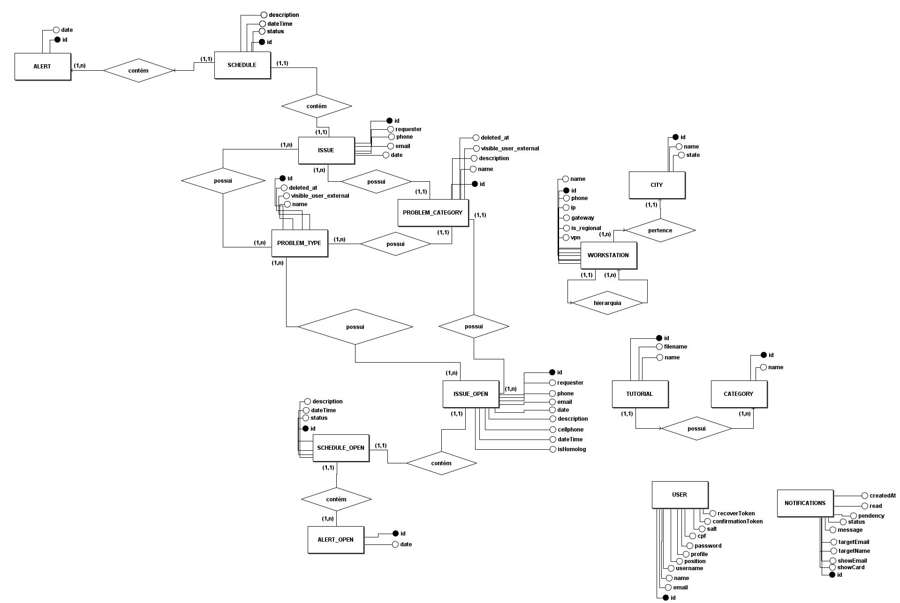
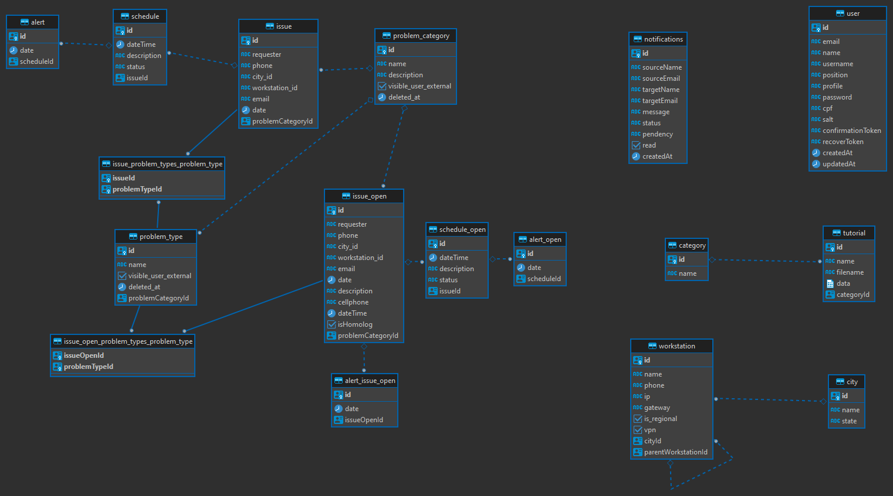

Documento de Arquitetura
1. Introdução
Este documento de arquitetura de software fornece uma visão geral da arquitetura do sistema da aplicação Schedula. Neste documento, estarão presentes informações que dizem respeito às tecnologias utilizadas no projeto e o modelo arquitetural
2. Tecnologias
2.1. Linguagem de programação
Typescript: Linguagem de programação de código aberto que é interpretada de forma estruturada. Pode ser definido como um superconjunto sintático estrito de javascript. Typescript foi escolhido como linguagem de programação, pois fornece uma melhor legibilidade do código e facilita, de certa forma, que seja feita a validação se o código está funcionando corretamente.
2.2. Front end
React: Segundo o site oficial do React, trata-se de uma biblioteca JavaScript para a criação de interfaces do usuário. A decisão da escolha por essa tecnologia se deu principalmente pela familiaridade dos desenvolvedores com tal biblioteca, o que permitiria uma maior produtividade. Além disso, foi considerado o fato de que há uma maior facilidade de deploy com uma aplicação realizada com React sem nenhum uso de framework, pois este poderia ser realizado em qualquer servidor que tenha o ambiente node instalado.
2.3. Back end
Nest.js: É um framework Node.js de back end que permite a construção de aplicações server-side escaláveis, eficientes e confiáveis. Esse framework foi escolhido porque auxilia na construção de microsserviços organizados, leves e de fácil manutenção, reduzindo a chance de ocorrer erros e facilitando futuras refatorações.
3. Arquitetura
A arquitetura utilizada no projeto é a arquitetura de microsserviços. Essa é uma abordagem arquitetônica que separa o software em softwares menores que irão interagir por meio de API. Uma das vantagens de se utilizar essa arquitetura é que isola responsabilidades, contribuindo para a manutenabilidade do software. O diagrama da arquitetura do software Schedula pode ser observado abaixo:
-
Front end: Responsável por toda a interação do usuário com o sistema. Por meio desse serviço que o usuário poderá utilizar de maneira visual as funcionalidades que estão dentro do contexto da aplicação. Por exemplo, listar usuários, cadastrar usuários, fazer login, cadastrar postos de trabalho, registrar chamados etc.
-
Gestor de usuários: Microsserviço responsável pela gestão dos usuários da aplicação.
-
Detalhador de chamados: Microsserviço responsável pela gestão dos chamados, o que inclui as operações de criação, remoção, leitura e atualização no banco de dados.
-
Gerenciador de localidades: Microsserviço responsável pela criação, edição, remoção e leitura de cidades e postos de trabalhos, bem como o relacionamento entre essas entidades.
-
Gerenciador de tutoriais: Microsserviço responsável pela criação, edição, remoção e leitura de tutoriais, bem como o relacionamento entre essas entidades com categorias de tutoriais
-
Gestor de alertas: Microsserviço responsável pela gestão das mensagens enviadas pelos usuários admin para usuários comuns ou outros admins.
4. Diagrama Entidade Relacionamento (DER)
O diagrama entidade relacionamento é a representação gráfica da modelagem do banco de dados, visto que facilita a visualização como um todo do banco de dados, auxiliando a equipe de desenvolvimento. Faz a descrição dos objetos (entidades) envolvidos no projeto, com suas determinadas características (atributos) e seus relacionamentos.
Sua representação se dá num olhar mais abstrato para entender de forma mais geral a estrutura que possui o banco de dados da aplicação do Schedula.

5. Diagrama Lógico de dados (DLD)
O diagrama lógico de dados, é a representação mais próxima do que vai ser construído no banco de dados, possuindo tabelas e definindo todos os atributos, bem como suas chaves primárias e estrangeiras.
Ele estabelece a estrutura dos elementos de dados e também seus relacionamentos, de forma com que descreve as necessidades de dados para o projeto. Sua utilização serve para definir como o sistema Schedula deveria ser implementado.

6. Metas e Restrições da Arquitetura
| Meta | Descrição |
|---|---|
| Escalabilidade | Deve ser possível expandir as capacidades da aplicação com baixo impacto |
| Segurança | A aplicação deve impedir que dados sensíveis sejam expostos* |
| Desempenho | A aplicação deve apresentar um bom desempenho |
| Deploy | O deploy deverá ser realizado |
*Obs: O Schedula se trata de um sistema interno, ou seja, a exposição de dados sensíveis não é um problema tão grande pois trata-se de um ambiente controlado e que não é acessível por pessoas externas, além do que os funcionários que têm acesso respondem legalmente por vazamento de dados internos
| Restrição | Descrição |
|---|---|
| Conectividade | É necessária conexão com a internet para utilizar a aplicação |
| Plataforma | A aplicação suporta exclusivamente a plataforma web |
| Equipe | A equipe conta com 17 integrantes |
| Prazo | Projeto deverá ser desenvolvido até o final do semestre 2023/1 da UnB que tem como data de término 25/07/2023 |
| Tecnologias | Aplicação deve ser desenvolvida utilizando as tecnologias citadas neste documento |
7. Versionamento
| Versão | Data | Descrição | Autor |
|---|---|---|---|
| 1.0 | 29/05/2023 | Criação do documento | Ítalo Vinícius e Ian Fillipe |
| 1.1 | 30/05/2023 | Padronizando a formatação do documento | Ian Fillipe e Ítalo Vinícius |
| 1.2 | 10/07/2023 | Correção do microsserviço de alertas | Ítalo Vinícius |
| 2.0 | 10/07/2023 | Criação do DLD | Ítalo Vinícius |
| 2.1 | 10/07/2023 | Criação e adição do DER e DLD | Gabriel Avelino e Gabriel Bonifácio |
8. Referências
ReactJS. Disponível em: https://pt-br.reactjs.org. Acesso em: 18/01/2023
TypeScript. Wikipédia. Disponível em: https://pt.wikipedia.org/wiki/TypeScript. Acesso em: 18/01/2023
Noleto, Cairo. Typescript: o que é, principais conceitos e porquê usar!. Atualizado em: 05/01/2023. Disponível em: https://blog.betrybe.com/desenvolvimento-web/type. Acesso em: 18/01/2023
NestJS. Disponível em: https://nestjs.com. Acesso em: 18/01/2023